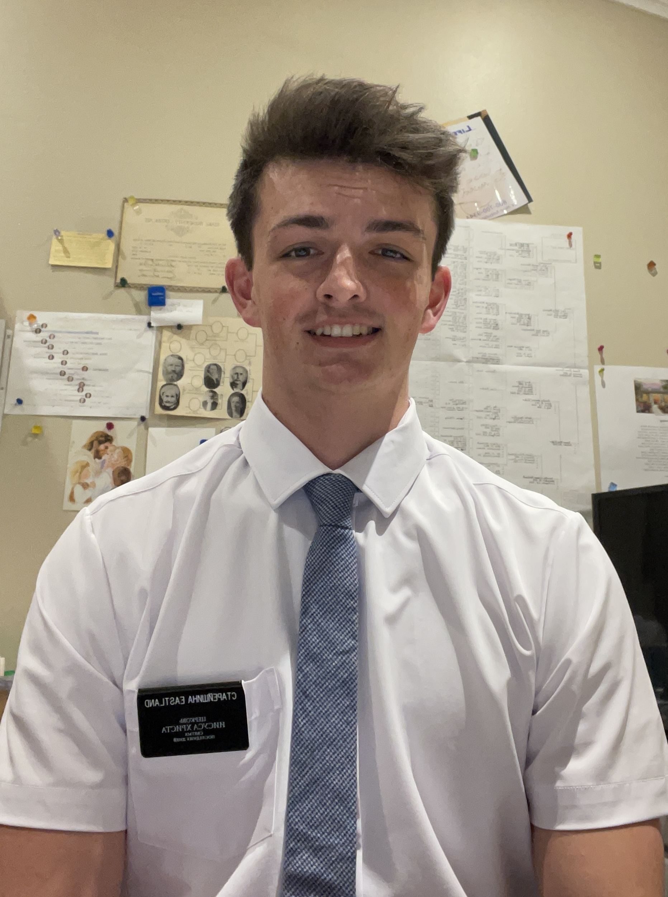

Motivated and hardworking student currently attending Brigham Young University. Dedicated leader with experience serving in international missions, community service, and team athletics. Proven ability to work with diverse groups, take on responsibility, and maintain strong work ethic.
Studying Business (Expected Graduation: 2027-28)
Graduated in 2021
Dates: 2022 - 2024
Served in international environments, developing language fluency in Russian.
Provided community support, teaching, and leadership across various areas.
Learned cultural adaptability and teamwork under challenging conditions.
Provided reliable and responsible childcare for families.
Built trust with parents and ensured safety and well-being of children.
Assisted with meal preparation, serving, and organizing shelter activities.
Engaged with individuals to provide support and create a welcoming environment.